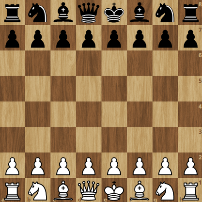
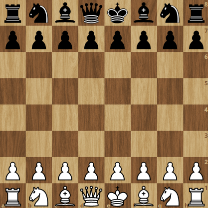

Remote Sensing Analyst and Developer at SceneSharp MAR 2020 - PRESENT

Automation of various image processing and geoprocessing tasks using python (rasterio, geopandas); development of python scripts to automate Sentinel-2, SAR imageries - batch downloading, preprocessing, cloud masking and mosaicking
Reading remote sensing and deep learning literature papers; implementing and evaluating deep learning models using keras
Performing visual and statistical interpretation of results, probability maps, model’s performance on the validation data
Creation and inspection of spatial training data; preparation of satellite data and features for machine learning and deep learning tasks, map layouts, ArcGIS Pro projects and geodatabases; management of spatial datasets and results efficiently
Effectively developing scripts more pythonic and following PEP8; maintaining and collaborating code with the team using github
Providing efficient, timely, reliable solutions and also in sharing ideas for both research and development of workflows
[PCAP-31-03] PCAP – Certified Associate in Python Programming issued by Python Institute -
Verify
DEC 2020


 
